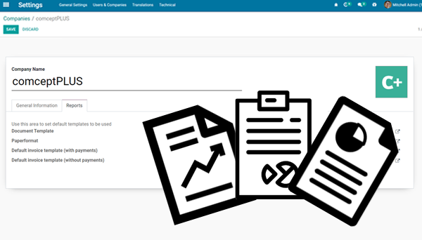

Multicompany Reports
Base setup to allow multiple layouts for reports

- Adds a tab in company where we can set the templates to use in reports.
- Allows to chose the paperformat to apply to a company's reports.
- Adds a method to enable update of specific fields in the company's record.
- Allows to select the external layout for the company